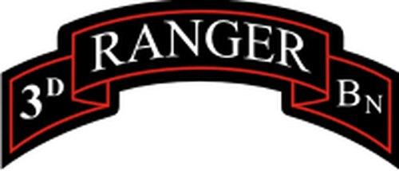

After I graduated basic training, I was offered a contract to attend the Ranger Assesment Selection Program (RASP) upon completion of Airborne School in Fort Benning, Georgia. RASP challenged me both physically and mentally, but taught me at such a young age what I was truly
capabale of if I put my mind towards something and never quit. Upon graduation, I was selected by the 3rd Ranger Battalion of the 75th Ranger Regiment where I served three and a half years in various Infantryman roles.

Positions Held
- Rifleman
- Grenadier
- Squad Automatic Weapon Machine Gunner
- Squad Designated Marksman
Skills and Qualifications Through the Army
- Leadership
- Teamwork
- Responsibility
- Time Management
- Attentive
- Self Starter
- Attention to Detail
- Adaptability
- Secret Security Clearance